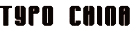
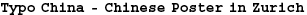

|  |
|  |
We did not hesitate for long when the designer He Jianping suggested this publication: Chinese posters had caught our attention some time before, as a satisfying contradiction of ideologically driven rigidity. The development of the poster in Hongkong and Taiwan may be ahead of the People's Republic, but seen overall this is a very recent years. Various international poster competitions have been instituted in China since the late 1990s, and here the designers want to lay themselves open to Western judgement as well. It is striking how freqently their posters focus on the characters, showing their desire to keep up with the times in terms of the unique richness of their own typograpical culture. This was not the only reason why it seemed right to us to concentrate on choosing typographical posters. Chinese characers have a visual quality and a semantic complexity that go far beyond the possibilities our alphabet affords. Our appeal to submit new works met with considerable enthusiasm. This gives a sense of the vitality of a group, small as yet, of young designers who are discovering international competition mechanisms. It is typical that many of the posters shown were produced on the designers' own initiative, because China still lacks clients who are preared to commission posters; and thus has no real poster culture. So this selection is as welcome as it is provisional, and fits in with our attentively sceptical yet hopeful view of ?"booming China". It goes without saying that the fascination with Chinese typography we have succumbed to is fed on ignorance. Chinese text often affects us simply as a texture, because we do not have the necessary translations skills to be aware of the posters' expressive quality. So can we do justice to these posters at all if we submit them to our usual selective scrutiny? Yes, if we are prepared to play by poser competition rules. For there too we make what we should see into what we want to see. And there too every poster operaes by taking mutual cliche's and expectations into account. Something that is part of the essence of a poster is always the perfect concession to positiv misunderstandings: a poster is intended first and foremost to be seen, not read. Felix Studinka |